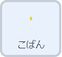
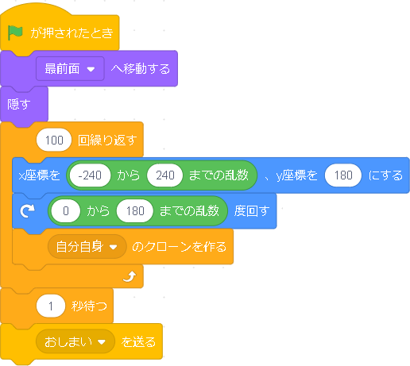
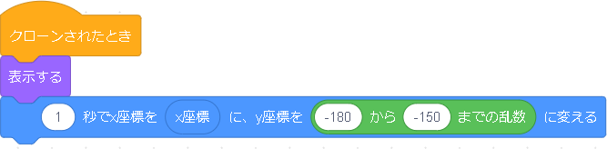
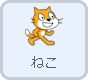
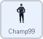
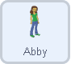
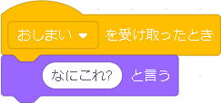
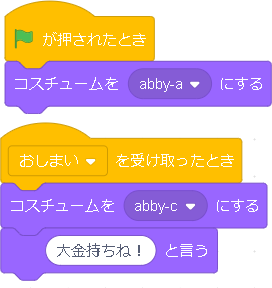
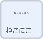
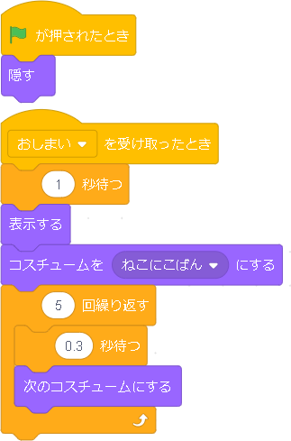

ことわざアニメ
ことわざを短いアニメーションにします。かなり自由度が高いプログラムです。プログラミングを通して、正しく意味を理解するのを助けられるかな～と思います。
プログラムするスプライト |
|
|  |
最初に、小判のアニメーションです。この小判は大量のクローンをランダムな位置、ランダムな向きにし、上から下に移動させています。 ほかのスプライトを隠すように小判を降らせたいので、開始と同時に最前面へ移動し、最初から小判が見えないように隠します。 次に、y座標（高さ）は同じに、x座標は実行画面の横の幅の範囲でランダム、かつ角度もランダムにしたクローンを作るプログラムを１００回繰り返します。こうすることで、クローンが大量にできます。 クローンがすべて作られ、小判がすべて落ちるまでが、この繰り返しの中で行われています。すべてが終わってから一秒おき、「おしまい」というメッセージをおくり、終了の合図をします。 |
|  |
クローンが作られたら、まず、最初に隠すというブロックを使っておりこのままでは見えないので、表示をします。 そのあと、１秒かけて実行画面の一番下に落とします。ただし、全部のyを-180にしてしまうと、積もった感じにならず、すべて横一列に並んでしまうため、高さを少しずつ変えるためにランダムにします。 これで降ってきた小判が積もるアニメーションは完成です。 |
プログラムするスプライト   |
|
|  |
次に、周りの登場人物のプログラムです。最初は猫さんです。 猫さんは最初からあまり動きがないので、小判が落ち終わったとき、つまり、「おしまい」のメッセージを受け取ったときに発言します。 |
|  |
次に、女性と男性のプログラムです。女性も男性も、似たようなプログラムなので女性を例にします。 まず、スタートしたら、アニメーションをはじめからにしたいので、最初のコスチュームにします。 そして、小判が落ち終わって「おしまい」のメッセージを受け取ったら、コスチュームを喜んでいるものにし、セリフを言います。 男性のほうも同じように、実行されたあと、小判が落ち終わった後のプログラムをします。 |
|
次に、周りの登場人物のプログラムです。最初は猫さんです。 |
|
プログラムするスプライト |
|
|  |
最後は、落ち終わった後の文字のアニメーションのプログラムです。 実行されてすぐは表示されないように隠します。 そして、小判が落ち終わったら、コスチュームを変えます。一文字ずつ増やすプログラムではなく、あらかじめ、コスチュームに「ねこにこばん」を一文字ずつ増やしていくものを用意し、コスチュームを一つずつ変えることで、文字が増えるように見えるアニメーションにしているようです。 |